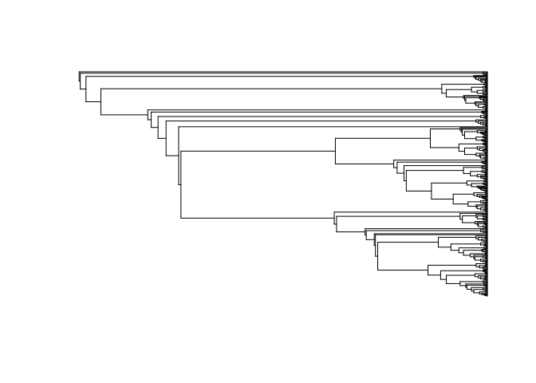

rphyloxml provides access to the phyloXML file format. For now, the only functions that are implemented in the package are:
-
write_phyloxml: A method to coercephyloobjects from theapepackage as phyloXML (XML) documents. -
read_phyloxml: A method to read phyloXML documents into R. -
validate_phyloxml: A wrapper ofxml2::xml_validate, which allows validating a phyloXML doc using the phyloxml.xsd schema (see here)
This package has been motivated to be used with the javascript library jsPhyloSVG, for which we are currently developing an R package with the same name that provides an htmlwidget here.
Installation
You can install rphyloxml from github with:
# install.packages("devtools")
devtools::install_github("USCBiostats/rphyloxml")Writing phyloXML files
In the following example, we create a random tree using the rtree function from the ape package, and later on coerce it into a phyloXML document using write_phyloxml.
library(ape)
library(rphyloxml)
set.seed(12)
x <- rtree(3)
x
#>
#> Phylogenetic tree with 3 tips and 2 internal nodes.
#>
#> Tip labels:
#> [1] "t1" "t2" "t3"
#>
#> Rooted; includes branch lengths.z <- write_phyloxml(x)
z
#> {xml_document}
#> <phyloxml schemaLocation="http://www.phyloxml.org http://www.phyloxml.org/1.10/phyloxml.xsd" xmlns:xsi="http://www.w3.org/2001/XMLSchema-instance" xmlns="http://www.phyloxml.org">
#> [1] <phylogeny rooted="true">\n <name>A phylogenetic tree</name>\n <de ...You can get a “nicer” view of it by doing the following:
cat(as.character(z))
#> <?xml version="1.0" encoding="UTF-8"?>
#> <phyloxml xmlns:xsi="http://www.w3.org/2001/XMLSchema-instance" xmlns="http://www.phyloxml.org" xsi:schemaLocation="http://www.phyloxml.org http://www.phyloxml.org/1.10/phyloxml.xsd">
#> <phylogeny rooted="true">
#> <name>A phylogenetic tree</name>
#> <description>Some description</description>
#> <clade>
#> <clade>
#> <branch_length>0.26938187633641064167</branch_length>
#> <clade>
#> <name>t1</name>
#> <branch_length>0.16934812325052917004</branch_length>
#> </clade>
#> <clade>
#> <name>t2</name>
#> <branch_length>0.03389562247321009636</branch_length>
#> </clade>
#> </clade>
#> <clade>
#> <name>t3</name>
#> <branch_length>0.17878500418737530708</branch_length>
#> </clade>
#> </clade>
#> </phylogeny>
#> </phyloxml>And to store the document, you just need to use xml2 (which is what powers the package) as follows:
xml2::write_xml(z, "mynicetree.xml")Reading XML files
We will read the file amphibian_tree_of_life_Frost_DR_2006.xml available in both the package and the phyloxml website.
# Reading from the package files
fn <- system.file("phyloxml/amphibian_tree_of_life_Frost_DR_2006.xml", package="rphyloxml")
xmltree <- read_phyloxml(fn)
str(xmltree, 3)
#> List of 1
#> $ Amphibian Phylogeny, Frost DR, 2006:List of 3
#> ..$ .Data :'data.frame': 715 obs. of 10 variables:
#> .. ..$ id : int [1:715] 359 360 361 362 363 364 365 366 367 368 ...
#> .. ..$ name : logi [1:715] NA NA NA NA NA NA ...
#> .. ..$ branch_length: num [1:715] NA NA NA NA NA NA NA NA NA NA ...
#> .. ..$ isleaf : logi [1:715] FALSE FALSE FALSE FALSE FALSE FALSE ...
#> .. ..$ parent : int [1:715] NA 359 360 361 362 363 364 365 366 367 ...
#> .. ..$ confidence :List of 715
#> .. ..$ width :List of 715
#> .. ..$ taxonomy :List of 715
#> .. ..$ sequence :List of 715
#> .. ..$ events :List of 715
#> ..$ rooted : chr "true"
#> ..$ rerootable: chr "false"
#> - attr(*, "class")= chr "phyloxml"# We can coerce this into a mulitphylo list
(apetree <- phyloxml2phylo(xmltree))[[1]]
#>
#> Phylogenetic tree with 358 tips and 357 internal nodes.
#>
#> Tip labels:
#> NA, NA, NA, NA, NA, NA, ...
#> Node labels:
#> NA, NA, NA, NA, NA, NA, ...
#>
#> Rooted; includes branch lengths.plot(apetree)
#> Warning in plot.phylo(x[[i]], ...): 714 branch length(s) NA(s): branch
#> lengths ignored in the plot